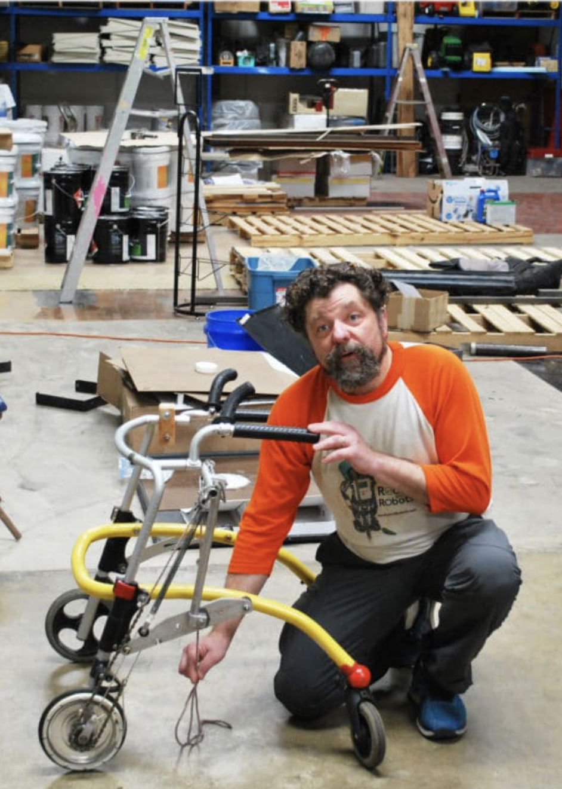

About Us
The "robots" part of Rocks and Robots is located at 424 Little Lake Drive Ann Arbor, MI.
Drop-off is here at 9 AM. Pick-up for AM-only kids is here at 12 PM. Pick-up for full-day-kids is here Monday, Wednesday, and Friday at 3:30 PM.
The "rocks" part of Rocks and Robots is located at Planet Rock 82 Aprill Drive, Ann Arbor, MI.
Pick-up for full-day-kids is here Tuesday and Thursday at 5 PM.
Welcome to Rocks & Robots! We consider it a privilege that you have come to our website to learn more about the life-changing experience that Rocks & Robots offers!
The founder, Dr. George Albercook has a Ph.D. in Analytical Chemistry and did post-graduate doctoral work at the University of Michigan. He was a Research Faculty member in the Atmospheric, Oceanic and Space Physics Department at the University of Michigan.
Dr. George also wrote an instruction book about autonomous flying robots. He is actively teaching the camp each year, alongside his qualified staff.
The camp was founded over 20 years ago. The staff at Rocks & Robots have been vetted and found to be extremely helpful in getting kids to think for themselves and foster those "aha" ideas.
For more information, please Contact Us